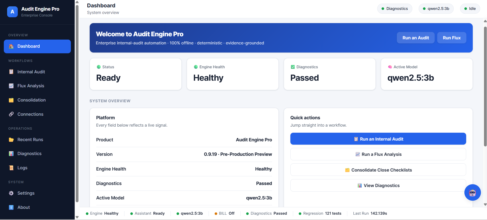
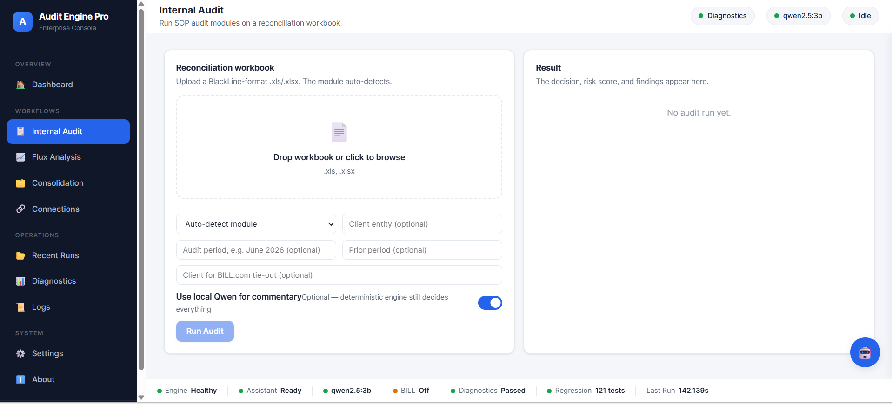
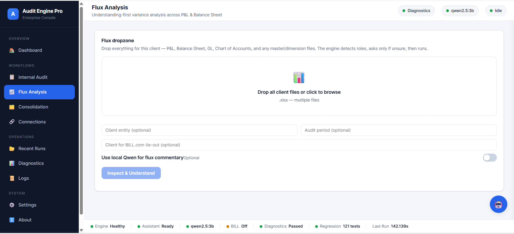
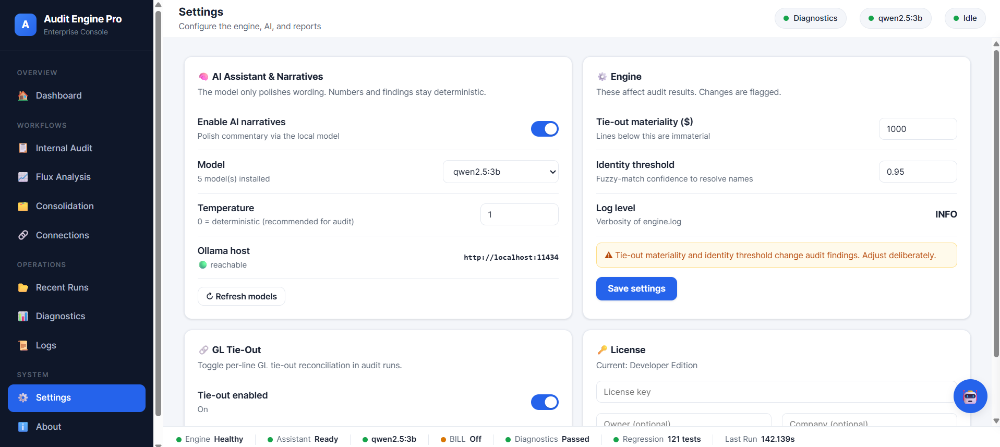
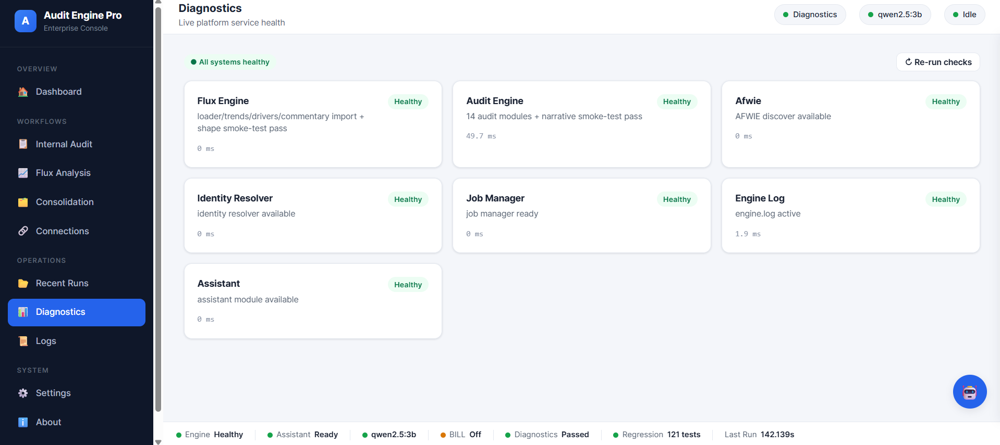
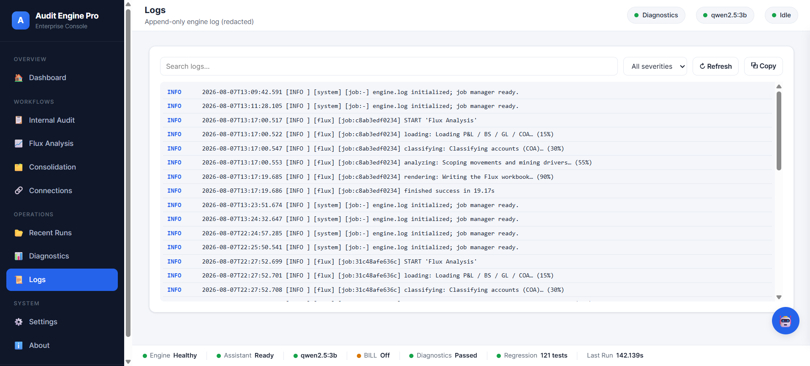
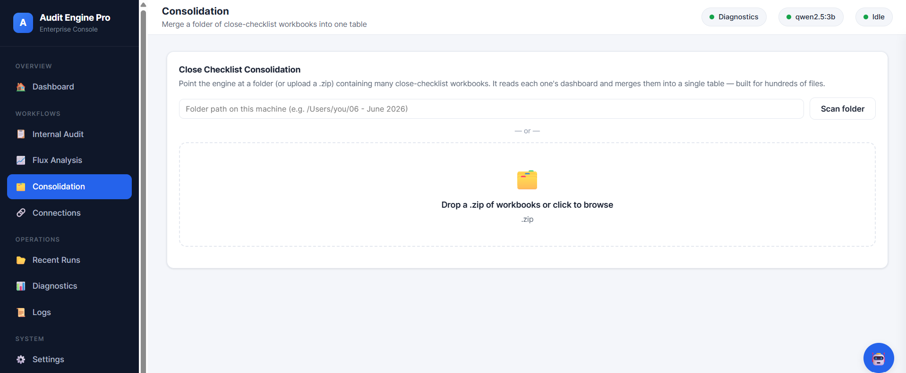
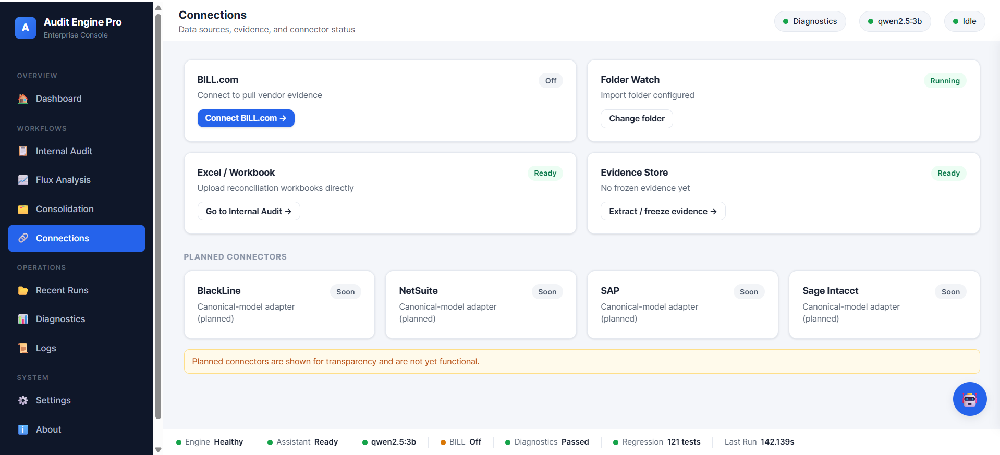
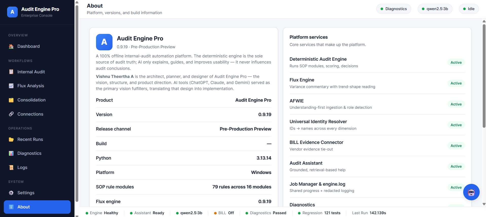

Internal Audit & Financial Analysis Automation
Audit Engine Pro executes standard-operating-procedure audit modules and variance analysis with a deterministic core — then lets an optional, local AI layer explain the work. The engine decides; the model narrates.

The core principle
The deterministic engine is the sole source of audit truth. AI only explains, guides, and improves usability — it never influences an audit conclusion.
Every number and every decision is produced by rules, calculations, scoring and validation. The same inputs always produce the same output — the foundation of a reproducible, defensible audit.
What it is
Audit Engine Pro brings together SOP-driven audit execution, understanding-first variance analysis, evidence workflows, and an operations console — designed to run locally, so financial data stays on the machine.
SOP audit modules apply their checks, score risk against a fixed matrix, and render an Approve / Needs Review / Reject decision — reproducibly.
The ingestion layer inspects each file, classifies its role, and asks a clarifying question only when the input is genuinely ambiguous.
When master data is available, output uses the real customer and vendor names rather than exposing internal identifiers.
An optional local model polishes commentary and answers questions. It never sees the cloud and never decides an audit result.
Findings carry severity, confidence, the SOP basis, and the required action — and flow into a structured report.
Dashboard, diagnostics, logs, run history and settings — configured through a GUI, not by editing files.
Figures reflect the current pre-production build (v0.9.19) and its automated test suite. See engineering.
The Audit Engine
Upload a reconciliation workbook; the module auto-detects. The engine runs the SOP's checks, scores risk, and produces a decision with a full exception report — each finding written like a workpaper note.

Each module encodes a standard operating procedure: what to check, what counts as an exception, and how to score it. Results are deterministic — the same workbook always yields the same decision.
Audit modules
Flux Analysis
Flux works with real-world financial workbooks rather than assuming one rigid template. Drop the client's files — P&L, Balance Sheet, GL, Chart of Accounts, and master/dimension data — and the engine detects roles, asks only when unsure, then analyses across the full P&L and Balance Sheet.

When customer or vendor master information is present, the commentary names the actual business driving a movement rather than exposing a meaningless internal identifier.
Adaptive Understanding & the Assistant
Before analysis runs, the platform inspects and classifies each input, evaluates its own confidence, and — only where real ambiguity exists — asks a targeted question, validating the answer against what it actually detected.
It reads structure, assigns roles, scores confidence, flags ambiguity, asks when necessary, and continues only once the ambiguity is resolved. This keeps the deterministic engine working on inputs it actually understands.
An optional assistant helps users understand features, navigate workflows, explain findings and Flux, and interpret errors — answering from grounded product and run context. It is an assistance layer and does not replace the deterministic engine.

Optional local AI
If a local model runtime is available, you can select an installed model in Settings and set its temperature. The model is used to polish wording; numbers and findings stay deterministic. Engine-affecting settings, like tie-out materiality and the identity threshold, are clearly flagged.
The Operations Console
Dashboard, Internal Audit, Flux, Consolidation, Connections, Recent Runs, Diagnostics, Logs, Settings and About — with a persistent status bar showing engine health, the active model, and the current run.




Progress & observability
Long-running operations expose the current stage as they work.
Determinate progress and elapsed time, with a clear completion state.
Problems surface as warnings and errors rather than failing silently.
A high-level, redacted diagnostic log records what happened, per run.
Product architecture
A conceptual view of how work flows through the platform. The local AI assistant sits alongside the pipeline as an assistance layer — never as the source of audit truth.
Engineering
The properties below are structural, not marketing — they come from how the platform is built and tested.
Same inputs, same outputs. No randomness in the decision path.
Each module encodes a documented standard operating procedure.
Findings carry confidence; ambiguity is handled explicitly, not hidden.
141 automated tests pin fixed behaviour and per-module outputs so refactors can't quietly change results.
An append-only, redacted engine log with per-run diagnostics.
Runs can be repeated to produce the same defensible result.
Connections & integrations
Connect to pull vendor evidence for tie-out.
Point the engine at a local import folder.
Upload reconciliation workbooks directly.
Freeze an evidence snapshot for tie-out.
Canonical-model adapter.
Canonical-model ERP adapters.
Planned connectors are shown for transparency and are not yet functional.
Screenshots
These are real screens from the current build. Click any image to enlarge.

About
A 100% offline internal-audit automation platform. The deterministic engine is the sole source of audit truth; the optional AI layer only explains, guides and improves usability.
Vishnu Theertha A is the architect, planner and designer of Audit Engine Pro — the vision, structure and product direction. AI tools served as the primary vision fulfillers, translating that design into implementation.
Development status: pre-production preview, under active development.
Interested in Audit Engine Pro?
For a walkthrough, a licensing conversation, a partnership, or an acquisition discussion, get in touch directly.
Contact: [ configure contact — see README ]